<nav class="bg-stone-900/90 p-4">
    <div class="container mx-auto flex flex-col md:flex-row justify-between items-center">

        <div class="flex justify-start col-span-1 p-2">
            <div class="flex gap-4 ">
                <div (click)="setLineHeightWCAG()" class="w-[60px] h-[60px] p-2 flex items-center justify-center border ">
                    
                </div>
                <div (click)="setLetterSpacingWCAG()" class="w-[60px] h-[60px] p-2 flex items-center justify-center border ">
                    
                </div>
            </div>
        </div>
        <div class="flex justify-end col-span-1">
            <div class="flex gap-4">
                <button (click)="setFontSizeWCAG(19)" class="w-[60px] h-[60px] p-2 flex items-center justify-center border-1"
                    aria-label="Zmień rozmiar czcionki na 19px">A</button>
                <button (click)="setFontSizeWCAG(24)" class="w-[60px] h-[60px] p-2 flex items-center justify-center border-1"
                    aria-label="Zmień rozmiar czcionki na 24px">A+</button>
                <button (click)="setFontSizeWCAG(30)" class="w-[60px] h-[60px] p-2 flex items-center justify-center border-1"
                    aria-label="Zmień rozmiar czcionki na 30px">A++</button>
                <div (click)="setColorWCAG()" class="w-[60px] h-[60px] p-2 flex items-center justify-center border-1 ">
                    
                </div>
            </div>
        </div>
    </div>
</nav>